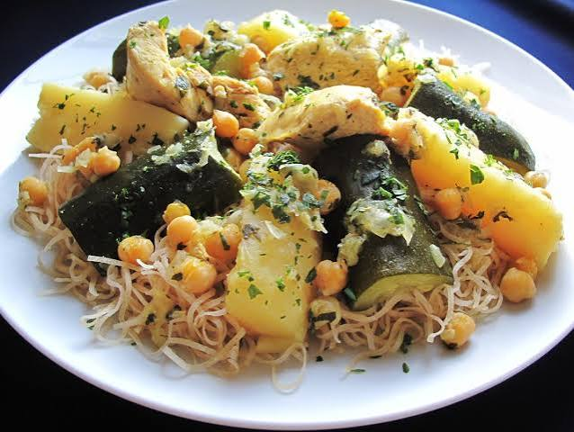

Rechta

Description of the dish
If couscous is the king of Algerian cuisine, Rechta is undeniably the queen of the
Algiers culinary tradition. This exquisite dish centers around incredibly thin, flat
ribbons of fresh semolina dough that closely resemble fine linguine or angel hair
pasta. Primarily prepared for high-stakes celebrations like Eid, Mawlid (the Prophet's
birthday), and weddings, Rechta is a profound symbol of hospitality, warmth, and
refinement in the capital city.
What sets Rechta apart is the magic of its texture and flavor pairing. Just like
Couscous Algérois, it is served with a delicate, velvety sauce blanche (white sauce)
heavy on cinnamon, black pepper, and sweet grated onions. The noodles themselves are
never boiled; instead, they are lightly oiled and delicately steamed multiple times
over the bubbling chicken broth. This ensures the strands remain beautifully distinct,
tender, and deeply saturated with the savory aroma of the stew below.
Ingredients
For the noodles:
- 500g fresh or dried Rechta noodles (semolina noodles)
- 2 tbsp vegetable oil (for coating)
- 1 tbsp smen or butter (for finishing)
For the white sauce and chicken:
- 4 to 6 chicken pieces
- 1 large yellow onion, very finely grated or puréed
- 1 cup chickpeas (soaked overnight or canned)
- 4 medium turnips, peeled and halved lengthwise
- 2 medium zucchini, halved lengthwise (optional)
- 1 cinnamon stick (plus a pinch of ground cinnamon)
- 1 tbsp smen or butter (plus 1 tbsp oil)
- Salt and black pepper to taste
Steps
-
Prep the Noodles: Gently loosen the Rechta noodles in a large, wide bowl. Drizzle
with 2 tablespoons of oil and use your fingers to delicately coat the strands so
they do not stick together during the steaming process.
-
Sauté the Base: In the bottom of a couscousier (or deep pot), melt the smen and
oil. Add the chicken pieces, puréed onion, cinnamon stick, ground cinnamon, salt,
and black pepper. Sauté on low heat for about 10–15 minutes until the onions are
sweet, translucent, and fragrant.
-
Simmer the Broth: Pour in roughly 1.5 liters of hot water and add the chickpeas.
Bring the liquid to a boil, then lower the heat to a steady simmer.
-
First Steam: Place the oiled Rechta noodles into the steamer basket (keskes) and
set it securely over the pot. Once you see steam rising freely through the
noodles, let them steam for about 10–12 minutes.
-
Moisten and Fluff: Transfer the steamed noodles back into the large bowl. Sprinkle
them with a few tablespoons of warm water (or a ladle of the cooking broth),
gently tossing with a fork or your fingers to separate the strands. Let them rest
for 5 minutes.
-
Add Vegetables & Second Steam: Drop the turnips (and zucchini, if using) into the
simmering broth. Place the steamer basket with the noodles back on top and steam
for a final 10 minutes, or until the vegetables are tender and the chicken is
fully cooked.
-
Assemble and Serve: Pour the hot Rechta noodles into a wide, shallow serving
platter and gently fold in a tablespoon of butter or smen. Arrange the pieces of
chicken and the vegetables beautifully on top, then generously ladle the rich,
aromatic white sauce and chickpeas over everything.
Home